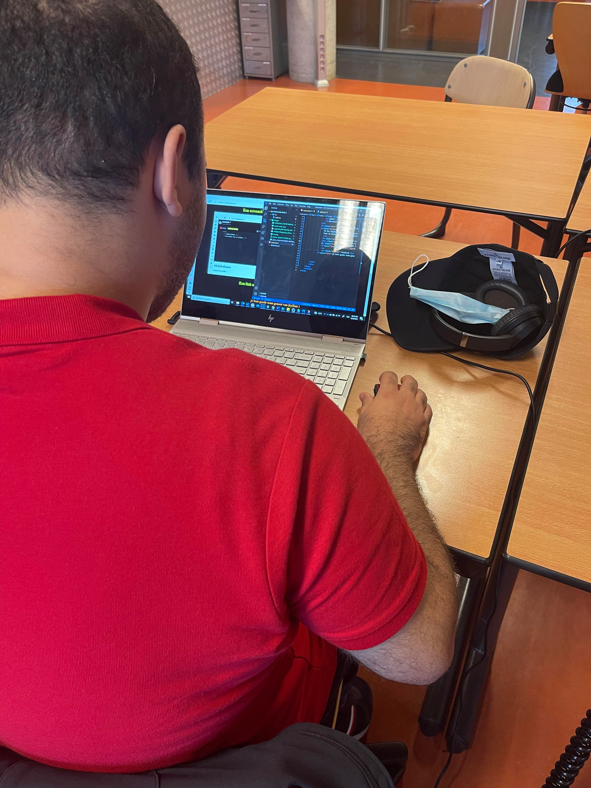
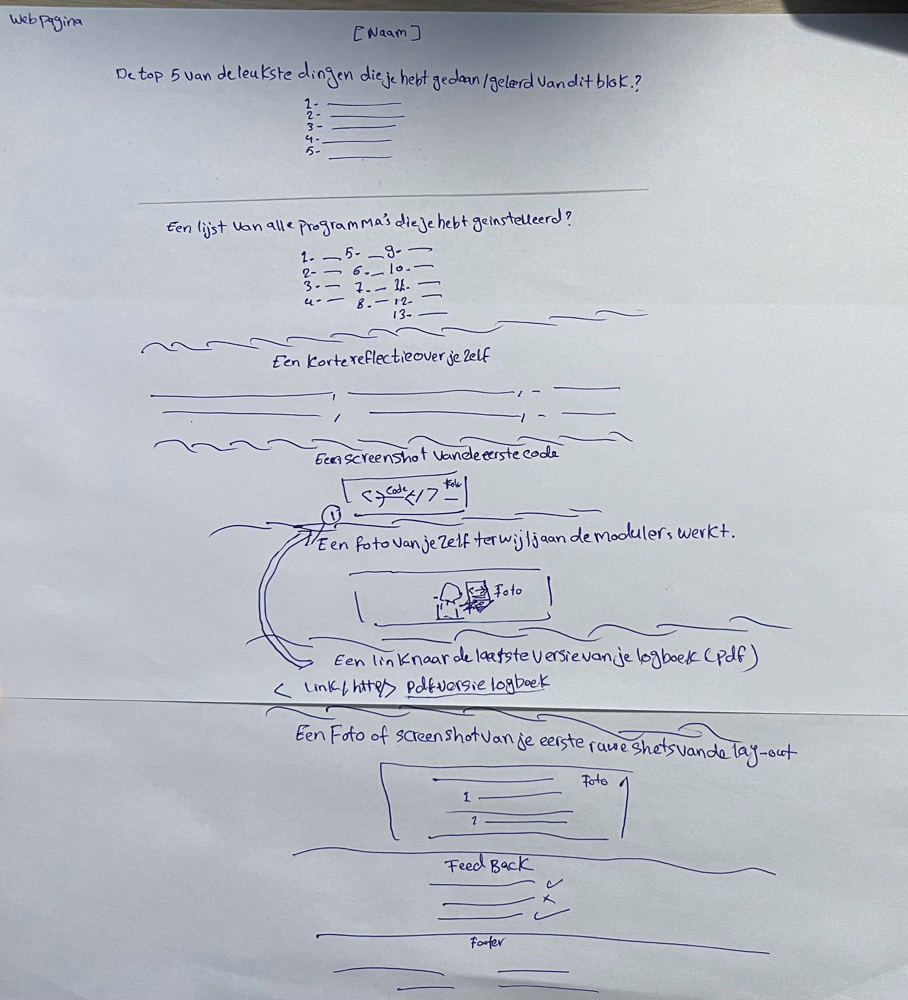

Abdelrahman Mohamed
De top 5 van de leukste dingen die je hebt gedaan / geleerd van dit blok.?
- Ik vind dat git en GitHub zo belangrijk is en leuk om te leren van elkaar
- ik vind basis kanis van html is belangrijk om beginnen met coderen dat vind ik leuk
- ik heb css geleerd en het was echt mooie en leuk dat je worden color kan veranderen
- ik heb javascript geleerd valt beetje moeilijk mee maar ik vind dat melding die ik had gekregen en die ik had zelf gecodeerd ik interessant
- ik vind een gebruik maken van (class) en (id) is echt handig
Een lijst van alle programma's die je hebt geïnstalleerd?
- Office 360
- Micrsoft OneDrive
- Micrsoft Teams
- Firefox – Google Chrome-Microsoft edge
- WinRaR/7-zip
- MultiCommander
- Microsoft Visual studio code
- Oracle vm Virtualbox 6.1.26
- Notepad++
- Git/GitKraken
- Java 8
- XAMPP
- Microsoft visual c++
Een korte reflectie over jezelf:
Ik ben begonnen met introductie van modules vervolgens ik heb de opdrachten van modules doorgelezen een op een , daarna heb ik een computer voorbereid voor programmeren en heb ik alle programma’s die nodig is geïnstalleerd zodat ik snel kan starten daarna ben ik begonnen met devops en had ik moeite met verstaan van paar opdrachten zoals Git commit maar uiteindelijk heb ik af. Toen ik klaar was met devops opdrachten heb ik front end door genomen in het begin was het makkelijk, is gewoon de basiskennis van html vervolgens heb ik video’s door genomen en heb ik praktijk gecodeerd en heb ik van mijn fouten geleerd zodat ik mijn opdrachten in orde goed kan maken , en heb ik feedback van mijn docent goed gelezen natuurlijk vervolgens heb ik verder gegaan met de rest van de opdrachten zoals CSS en Java script en voormijn vind ik html CSS is de beste elementen maar Java script is beetje moeilijk om te tippen moest ik veel onthouden en natuurlijk heb ik het logboek-planning in de gaat gehouden en alles genoteerd.
Een screenshot van de eerste code die je hebt geschreven?
Een link naar de laatste versie van je logboek (pdf).
Pdf Versie Logboek
Een foto van jezelf terwijl je aan de modules werkt.
Een foto of screenshot van je eerste ruwe schets van de lay-out.
feedback
- goed team genoot , je website ziet er goed uit(kyllian)
- Niet alles in de midden zitten(jordani)
- Is groot uitgerekt (Christian)
- Je code een beetje ordenen(jaren)
- Iets minder tekst(kevin-robin)
- Veel kleuren gebruikt[Aydin]
- Heel duidelijk en simpel, mooie kleuren en kan niet beter gemaakt worden. [Mo Manager]
- Is mooie (Abdel)
- Is mooie(ties)
- Code is een beetje chaotisch maar de website is perfect (Chahid)